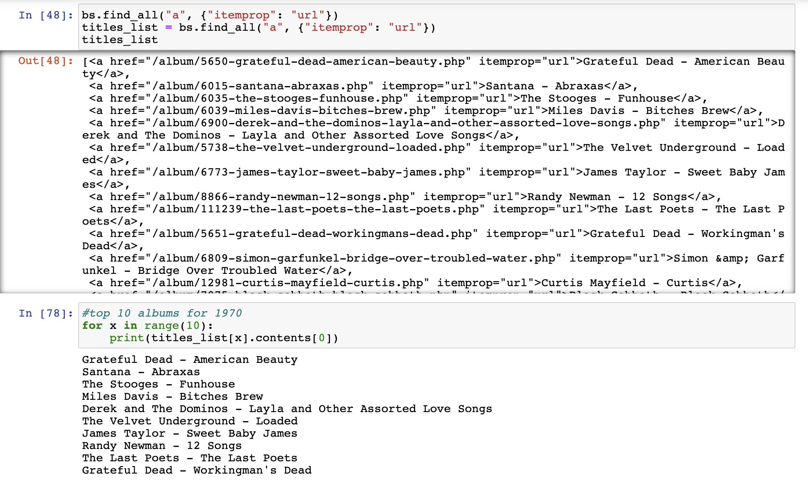

If you're a strong music enthusiast and like to keep up with
its culture and affairs, you probably share
some of the aspects surrounding it with me.
For instance, you are heavily engaged with atleast one
music streaming platform - Spotify, Apple Music,
Deezer, TIDAL, etc. - relying on it for all your
go-to playlists, personalized recommendations for new
releases, and everything else. You also attend live
performances whenever you can. But if you're someone
who observes the effect of loud music closely, you
probably understand the damage it yields on your ears.
Unless generally nonchalant, you carry and wear ear protection
at concerts, festivals, clubs, etc.
But as a frequent concertgoer myself, I would often be perplexed
by the varying difference in people's behaviour towards loud music.
Some were indifferent and would not wear any protection - seeminlgy
tolerant of the loud sounds booming through the walls and our bodies.
Some would eventually take a break after continuous dancing, complaining
of numbness or tingling in the ears. A lot of times MCs or hosts
wouldn't mind the loudness levels as well, and I often felt as if
I was the only one incapable of having a good tolerance to such loud music.
This narrative gave me the impetus to know a little more about hearing loss,
especially within the context of music. Although, as most impairments or
diseases go, hearing loss isn't as popular a topic that's talked about, so
I was aware of the research implications it had. Moreover, as mentioned
previously, the discussion of loudness in music feels more buried than
other popular discourses - production, fan engagement at venues, etc.
All in all, I decided to investigate hearing loss cases within the US & the
UK, and tried to investigate the possible causes behind it.
Having somewhat of a fair idea about the Loudness War (recorded
songs sounding increaingly loud overtime), as well as the
potential rave music scene, loud stadium rock concerts during
the era of bands like AC/DC, I had these leads to track the
potential contributions to hearing loss overtime. As a result, I
also chose a similar period to study in: the 1970s to 2010.
This was inclusive of the Loudness War era as well as eras of
certain genre-popular concerts (raves).
As per the regions - US and UK - I chose these countries since most data on music
and genres relating to raves, the idea behind tours and concerts still remains a
rather traditionally western concept. My research journey would only be easier
to explore if I followed certain biases, and I think fairness in the data
and reveals/clues in the story were a cost I incurred.
First, I collected data on hearing loss in the US & the UK. The closest I came to finding an accurate data source based on my needs were files on hearing impairments, and their rates in the US and UK from 1990-2010. This didn't cover the 70s and 80s, yet I still proceeded to plot the values on charts.
I initially chose to display the number of cases in both the countries but realized the distribution gap between the two. The UK had a higher report of cases which would mess up the scales if I were to compare them together, following which I chose to display rates.
This chart below compares the rates of the two countries side by side:
Here, there is a sharp drop in rates in the UK from the year 2000. As for the report of hearing loss cases alone, these could be the potential causes:
Now, I decided to do some data scraping and find out the trendline of dynamic ranges of albums over the original period of 1970-2010. I decided to choose each year's top 10 albums and find out the average DR of that year accordingly. For this, I had to do a lot of web scraping which was fun! I had to do dig deep into the structure of webpages and problem solve a lot of times to extract and clean exactly the things I needed.
I also generated a csv file that stored all the top 10 albums in that year span. This ensured that I could use it later as a dataframe to ease further web scraping to find out the dynamic ranges of all those albums.
After a lot of scraping and debugging, this was my plot of the average dynamic ranges of albums over the years 1970-2010:
As you can see, albums generally had higher average Dynamic Range until around the year 1992. There was a widespread compression of songs across records which destroyed the dynamic sound a lot of older cuts would have.
I made another graph which prefaces the hearing loss rates and dynamic ranges side by side.
As you can see above, the scales still look very off. The above chart only displays the rates in the US (blue), but even after adding the UK results (in red), they are not visible as it is forced to sit behind the US' results in an effort to combine everything together. This is also odd to make an inference from, since the chart that showed just the rates of the US cases was a positive, increasing trend line. Yet here, the line retains the shape of the UK trendline, despite showing in code that US' results are making the difference.
I would like to draw a general conclusion that points to hearing loss rates increasing around the Loudness War era, but the hearing loss data itself presents a lot of loose ends to make a strong point in the end.
The addition of the decades 70s and 80s would've presented a bit more context to level out the rates in perspective. Right now, the standalone presentation of hearing loss data (despite a comparison to the dynamic ranges) seems arbitrary in terms of what could've caused it. For instance, the general uptrend of US cases could've been brought on by multiple factors: increase in population, more awareness around protecting one's ears, etc.
From my dataset, I did do a comparison of the dynamic range of a randomnly picked track from the 70s and a track from the late 2000s, in order to illustrate the evident compression and increase in loudness of music overtime.

The track on the left is Elton John's "Mellow" (1972), where there is a varying distribution of peaks and lows in the audio graph. On the other hand, we have J Dilla's track "Diff'Rence", released in 2006. You can see the drastic compresion of the tracks since there is not much difference in the highs and lows; they are nearly the same. This does not produce a dynamic sound when listening to the track.
But I had another observation while inspecting the audio graphs of tracks: the decrease in dynamic range overtime presumably constituted the original/ standard CD releases of albums. When I was looking for an album from 2010 to compare the DR of, I noticed how different versions of the album also had different dynamic ranges. Take for example, Kanye West's album "My Beautiful Dark Twisted Fantasy". When looking at the results of the album's dynamic range, the vinyl version had a much higher DR than the standard CD.
The vinyl has an overall DR of 10, while the CD has 5, within the same year. Such observations made me realize that during an automated task of scraping, maybe the code picked up the inaccurate versions of albums and skewed the DR chart. In relation to hearing loss, this only furthers the idea that there could be non-noise related causes for hearing loss. If the dynamic range of albums wasn't affected so as long as different versions provided good dynamic sounds, then pointing at the Loudness War as a prominent force behind hearing loss rates wouldn't make sense. Moreover, it isn't as if people do not use vinyl: if anything, it stands strong even in the age of streaming. Whilst CDs might have fizzled out in distribution, many music lovers still keep turntables and collect vinyl records, unaffected by streaming's influence.
Even a prior assumption about rave music stands unfounded. This genre categorization chart shows their popularity overtime. Dance and Electronic do not seem to make a strong mark during the late 90s and early 2000s, as compared to the Hip-Hop genre. There could be two things: while popular in the recorded music realm, live music still championed genres like Dance and Electronic that the chart doesn't show. The other factor could be relativity: in comparison to Hip-Hop, Dance & Electronic didn't make as much of an impact in popularity in that period. Yet, by itself, those genres still remained popular in reach

Some studies still favor the hypothesis that the Loudness War contributed to a significant amount of hearing loss in people across generations. The study "Temporal Trends in the Loudness of Popular Music over Six Decades" paints a similar picture with its illustrations: (Loudness from personal music players increasing overtime)
An increase in the loudness of recorded music could have definitely pushed a general risk towards hearing loss from the late 2000s. But uncertainty around the sudden drop in the UK's hearing loss rates, and a general positive trend in the US' increasing rates still remains. A lot of factors went unaccounted for, whether the age group affected by the Loudness War was necessarily represented in those cases, if the occupation of the people in those cases suffered from occupational hazard (loud construction noise), etc. As a result, while a lot of things remain arbitrary, we realized that reduced dynamic ranges of tracks certainly impacted listening, enough to warrant studies and a proper "Loudness War" discourse around it.